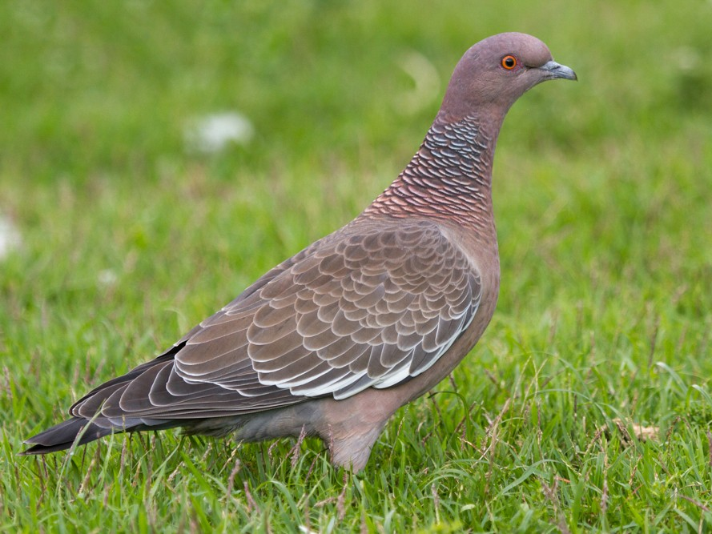

Pombão
Nome científico:(Patagioenas picazuro Temminck, 1813)
Nome comum:Pombão
Classificação biológica:
Domínio: Eukaryota.
Reino: Animalia.
Filo: Chordata.
Classe: Aves.
Ordem: Columbiformes.
Família: Columbidae.
Gênero: Patagioenas.
Espécie: Patagioenas picazuro.
Nutrição:Granívora.
Hábitos alimentares:Alimenta-se principalmente de sementes de gramíneas e leguminosas, sendo comum encontrá-la em áreas agrícolas, onde consome grãos cultivados como milho, soja e arroz. Também pode complementar a dieta com frutos e brotos, especialmente durante períodos de escassez de sementes. Em áreas urbanas, pode ser vista em parques e praças, alimentando-se de migalhas deixadas por pessoas.
Morfologia do corpo:Ave de porte médio a grande, mede de 32 a 36 cm de comprimento e pesa entre 300 a 400 g. Possui corpo robusto, cabeça pequena em relação ao corpo e cauda longa e arredondada. O bico é curto e fino, característico das pombas.
Comportamento:O pombão é uma ave geralmente encontrada em bandos ou pequenos grupos. Alimenta-se de sementes, frutos e grãos. Durante a reprodução, forma pares monogâmicos e constrói ninhos simples em árvores ou arbustos. É diurno, adaptável a diferentes ambientes e vocal.
Principais Presas:Como é uma ave granívora, não possui presas no sentido predatório. Sua dieta é baseada em sementes, grãos, frutos e brotos.
Principais Predadores:Aves de rapina, como o carcará e a coruja-buraqueira, além de mamíferos carnívoros, como guaxinins e raposas. Esses predadores podem atacar tanto os adultos quanto os filhotes e ovos nos ninhos.
Locais habitados
Distribuição:Encontrado em Todos os Biomas do Brasil

Habitat:O pombão é uma ave altamente adaptável que prefere áreas arborizadas, florestas, savanas, áreas agrícolas e urbanas. Eles se alimentam de sementes, frutos e grãos, e são comuns em diversos biomas do Brasil, como Amazônia, Cerrado, Mata Atlântica, Caatinga, Pantanal e Pampa.
Reprodução:A reprodução ocorre ao longo do ano, com picos na primavera e verão. O ninho é feito com gravetos e ramos, geralmente em árvores ou arbustos, mas também pode ser encontrado em construções humanas. A fêmea põe de 1 a 2 ovos, que são incubados por cerca de 14 a 16 dias. Ambos os pais se revezam na incubação e alimentação dos filhotes, que deixam o ninho em torno de 20 dias após a eclosão.